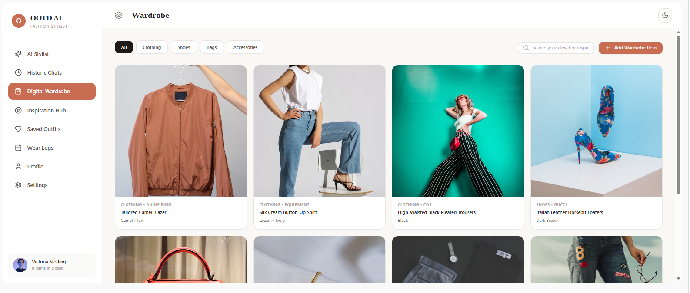

OOTD AI: fashion stylist chatbot
A chatbot that builds outfits from your own digital wardrobe. It includes a wardrobe manager, an inspiration hub that matches looks against what you own, saved outfits, and wear logs. I defined the features and user flows, then prototyped it with Google AI Studio and Gemini.
